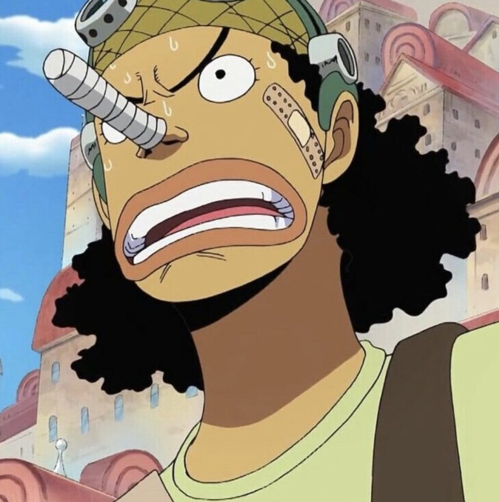

Overview
Usopp (Japanese: ウソップ), also known as Sniper King and "God" Usopp, is a fictional character from the manga and anime series One Piece, created by Eiichiro Oda. He first appeared in Chapter 23 and serves as the sniper of the Straw Hat Pirates.
Early Life
Usopp was born in Syrup Village to Yasopp, a member of the Red-Haired Pirates, and Banchina. After his father left to become a pirate and his mother later died from illness, Usopp grew up alone. To cope with loneliness, he became known for telling exaggerated lies and stories.
Personality
Usopp is known for being:
Although often fearful and insecure, Usopp consistently overcomes his fears when his friends are in danger.
Straw Hat Pirates
Usopp is the fourth member of the Straw Hat Pirates and the third to officially join the crew. His dream is to become a brave warrior of the sea like his father and earn recognition as a great pirate.
Sniper Journey
Usopp joined Luffy after helping defeat Captain Kuro and protecting Syrup Village. He was appointed as the crew’s sniper due to his exceptional marksmanship and creative combat tactics.
Powers and Abilities
Usopp possesses unique abilities, including:
His fighting style, known as the Usopp Arsenal, relies on trickery, strategy, and specialized projectiles rather than brute force.
Sogeking Identity
During the Enies Lobby arc, Usopp adopts the alter ego Sogeking, the King of Snipers. As Sogeking, he famously shoots down the World Government flag, declaring war on the government to save Nico Robin.
Growth and Development
Over time, Usopp matures from a cowardly liar into a dependable warrior. After the two-year time skip, he becomes physically stronger and develops a plant-based fighting style using Pop Greens.
Haki Awakening
During the Dressrosa arc, Usopp awakens Observation Haki, allowing him to sense distant auras and accurately target enemies beyond normal vision.
Legacy
Usopp represents:
From a habitual liar to a legendary sniper, Usopp's journey is one of the most powerful character developments in the One Piece series.